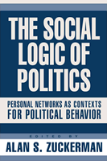

Re-establishes the connection between social life and political behavior
Re-establishes the connection between social life and political behavior


 Re-establishes the connection between social life and political behavior
Re-establishes the connection between social life and political behavior

|  |
The Social Logic of PoliticsPersonal Networks as Contexts for Political Behavioredited by Alan S. Zuckermanpaper EAN: 978-1-59213-148-8 (ISBN: 1-59213-148-4) |
"In the classic sociological tradition of the Columbia School, this impressive collection of studies explores the impact of families, friends, workplaces, and communities on our political choices and behavior. The imaginative research in this volume amply demonstrates that, despite the imposing presence of the mass media, we continue to be shaped in significant ways by the company we keep."
—Dennis Chong, John D. and Catherine T. MacArthur Professor, Northwestern University, Department of Political Science
Using classic theories and methodologies, this collection maintains that individuals make political choices by taking into account the views, preferences, evaluations, and actions of other people who comprise their social networks. These include family members, friends, neighbors, and workmates, among others. The volume re-establishes the research of the Columbia School of Electoral Sociology from several decades ago, and contrasts it with rational choice theory and the Michigan School of Electoral Analysis. Written by political scientists with a range of interests, this volume returns the social logic of politics to the heart of political science.
Excerpt available at www.temple.edu/tempress
"The Social Logic of Politics addresses the question of sociological influences on political behavior, and the essays in this volume do in fact succeed in this purpose, offering a significant contribution in this area. Zuckerman brings the original sociological themes and research of Lazarsfeld and his colleagues into the 21st century, and the scholarship here is state-of-the-art, showcasing a wide range of data and methodologies."
—Robert Shapiro, Columbia University
"Overall, this is an important collection of essays... an essential read."
—Perspectives on Politics
"[T]his book is very much needed and should be considered by all scholars and researchers engaged in the study of public opinion, political influence, and voting behavior... The Social Logic of Politics is a dazzling gift for all those that (still) think that politics is social. All at once, it sharpens core theoretical principles, updates the state of the art, and opens an intriguing research agenda.... the book retains an overall coherence."
—Contemporary Sociology
"[O]f primary interest to political science graduate students. Recommended."
—Choice
"Zuckerman’s book is a necessary addition to the collection of any scholar of public opinion and political participation, regardless of regional interest. The methods used throughout the articles are varied, and some are innovative...This book is a syllabus-worthy critique of the Michigan School, and should be considered by all students and scholars of political behavior."
—Journal of Politics
"[T]his cross-disciplinary work encouragingly demonstrates that sociological ideas have a home outside the formal bounds of the discipline...The Social Logic of Politics lays out a course for the application of sociological theory to formal political behavior."
—Social Forces
List of Tables and Figures
Preface and Acknowledgments
About the Contributors
Introduction: Theoretical and Methodological Context
1. Returning to the Social Logic of Politics – Alan S. Zuckerman
2. Individuals, Dyads, and Networks: Autoregressive Patterns of Political Influence – Robert Huckfeldt, Paul E. Johnson, and John Sprague
Part I. Families as Sources of Strong Political Ties
3. Political Similarity and Influence between Husbands and Wives – Laura Stoker and M. Kent Jennings
4. Do Couples Support the Same Political Parties? Sometimes: Evidence from British and German Household Panel Surveys – Alan S. Zuckerman, Jennifer Fitzgerald, and Josip Dasovic
5. Family Ties: Understanding the Intergenerational Transmission of Political Participation – Sidney Verba, Kay Lehman Schlozman, and Nancy Burns
Part II. Friends, Workmates, Neighbors, and Political Contexts: The Effects of Weak Ties on Electoral Choices and Political Participation
6. Changing Class Locations and Partisanship in Germany – Ulrich Kohler
7. Choosing Alone? The Social Network Basis of Modern Political Choice – Jeffrey Levine
8. Friends and Politics: Linking Diverse Friendship Networks to Political Participation – Laurence Kotler-Berkowitz
9. Networks, Gender, and the Use of State Authority: Evidence from a Study of Arab Immigrants in Detroit – Ann Chih Lin
10. Putting Voters in their Places: Local Context and Voting in England and Wales, 1997 – Ron J. Johnston and Charles J. Pattie
11. Party Identification, Local Partisan Contexts, and the Acquisition of Participatory Attitudes – James G. Gimpel and J. Celeste Lay
12. Macro-Politics and Micro-Behavior: Mainstream Politics and the Frequency of Political Discussion in Contemporary Democracies – Christopher J. Anderson and Aida Paskeviciute
Part III. The Social Logic of Politics: Looking Ahead
13. Agent-Based Explanations for the Survival of Disagreement in Social Networks – Paul E. Johnson and Robert Huckfeldt
14. Turnout in a Small World – James H. Fowler
Notes
References
Index
 | The late Alan S. Zuckerman was Professor and Chair of the Department of Political Science at Brown University and Research Professor, DIW-German Institute for Economic Research, Berlin, Germany. He is the author, co-author, and co-editor of several books, including The Politics of Faction: Christian Democratic Rule in Italy and Comparative Politics: Rationality, Culture, and Structure. His honors include serving on the faculty at Tel-Aviv University, the University of Pisa, and the University of Florence. |
Contributors: Christopher Anderson, Syracuse University; Nancy Burns, University of Michigan; Josip Dasovic, Brown University; Jennifer Fitzgerald, Brown University; James Fowler, University of California, Davis; James Gimpel, University of Maryland, College Park; Robert Huckfeldt, University of California, Davis; M. Kent Jennings, University of California, Santa Barbara; Paul E. Johnson, University of Kansas; Ron Johnston, University of Bristol; Ulrich Kohler, research scholar at the Wissenschaftszentrum, Berlin; Laurence Kotler-Berkowitz, Research Director National Jewish Population Survey 2000-1, United Jewish Communities; J. Celeste Lay, Tulane University; Jeffrey Levine; Ann Chih Lin, University of Michigan; Aida Paskeviciute; Charles Pattie, University of Sheffield; Kay Schlozman, Boston College; John Sprague, Washington University; Laura Stoker, University of California, Berkeley; Sidney Verba, Harvard University; and the editor.
Political Science and Public Policy
Sociology
Social Logic of Politics, edited by Scott D. McClurg.
The Social Logic of Politics Series, edited by Scott D. McClurg (formerly edited by Alan S. Zuckerman), directs attention to several related clusters of research in the social sciences. At the core is a theoretical principle: individuals make political decisions, like other choices, by taking into account cues from other persons. Studies move from individuals to groups to large scale collectivities. Usually examining micro-politics-voting and other forms of political participation; the place of politics in households, the family, the friendship unit, and the neighborhood- this research also studies how broader political and social contexts influence and are influenced by these micro-processes. It includes as well "small group behavior" in political institutions, such as exchanges of cues in legislatures and patron-client relations in bureaucratic agencies and political parties. Books in The Social Logic of Politics Series will apply research techniques that run the gamut of contemporary political science, sociology, communications, and geography.
© 2015 Temple University. All Rights Reserved. This page: http://www.temple.edu/tempress/titles/1775_reg.html.